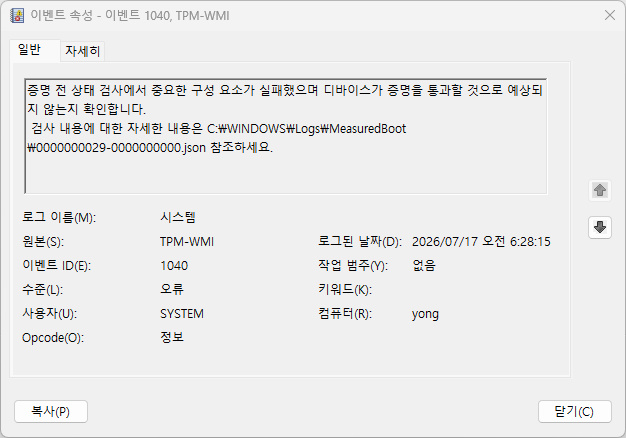

EVENT ID 1040
TPM-WMI 1040 장치 증명 사전 검사 실패 점검
장치 증명(어테스테이션) 사전 상태 검사에서 중요한 구성 요소가 실패해, 이 장치가 증명을 통과하지 못할 것으로 예상된다는 기록입니다. TPM-WMI 1801(펌웨어에 미적용된 Secure Boot 인증서)과 같은 시기에 나타나면 그 연장선일 수 있습니다.
문구만 보면 심각해 보이지만, 이 이벤트는 실제 장애가 아니라 Windows가 부팅 과정을 측정(Measured Boot)해 미리 자체 진단한 결과입니다. 원본 로그(TPM-WMI 1801 등)와 함께 보면 대부분 Secure Boot 인증서가 아직 최신 상태로 갱신되지 않아서 측정값이 예상과 어긋난 경우입니다.

BitLocker·Windows Hello 같은 실제 기능이 정상 동작하고 있다면 당장 조치가 급하지 않습니다. 기능 장애가 실제로 있는지 먼저 확인하는 것이 순서입니다.
발생 조건
- TPM-WMI 1801과 같은 시기에 기록
- BitLocker·Windows Hello처럼 장치 증명이 필요한 기능 사용 중
- MeasuredBoot 로그 폴더에 검사 결과 JSON 파일 생성
가능성 높은 원인
- Secure Boot 인증서가 최신 상태로 갱신되지 않아 부팅 측정값이 예상과 달라진 경우
- BIOS·UEFI 펌웨어가 오래되어 측정 부팅(Measured Boot) 체인이 기대값과 일치하지 않는 경우
- TPM 펌웨어나 초기화 상태 자체의 결함
점검 순서
- 이벤트에 안내된 MeasuredBoot 로그 폴더의 JSON 파일에서 실패한 구성 요소 확인 — 되돌리기 쉬운 항목부터 확인해 위험 없이 범위를 줄입니다.
- 같은 시기에 TPM-WMI 1801(Secure Boot 인증서 미적용)이 함께 있는지 확인 — 첫 확인 결과와 비교해 원인 후보를 좁힙니다.
- 메인보드·노트북 제조사 최신 BIOS로 업데이트한 뒤 재현 여부 확인 — 이 단계에서도 반복되면 다음 항목으로 넘어가세요.
- BitLocker·Windows Hello 같은 실제 기능에 장애가 있는지 확인 — 기능이 정상이라면 당장 조치가 급하지 않습니다.
주의사항
이벤트 문구가 심각하게 보이지만, 실제 BitLocker·Windows Hello 기능에 장애가 없다면 즉시 초기화나 재설치를 진행하지 마세요. TPM을 초기화하기 전에는 BitLocker 복구 키를 반드시 먼저 백업하세요.
관련 코드·가이드
자주 묻는 질문
- 이 이벤트가 뜨면 BitLocker나 Windows Hello를 못 쓰게 되나요? 바로 그렇지는 않습니다. 이미 설정된 BitLocker·Windows Hello는 계속 동작하는 경우가 많습니다. 다만 증명이 필요한 일부 기업·클라우드 인증 시나리오에서 제약이 생길 수 있어, 실제 기능 장애가 있는지부터 확인해야 합니다.
- MeasuredBoot 로그의 JSON 파일은 어떻게 여나요? C:\Windows\Logs\MeasuredBoot 폴더를 탐색기에서 열고, 이벤트에 표시된 파일명을 메모장이나 텍스트 편집기로 열면 어떤 구성 요소 검사가 실패했는지 텍스트로 확인할 수 있습니다.
최종 검토일: 2026-09-01